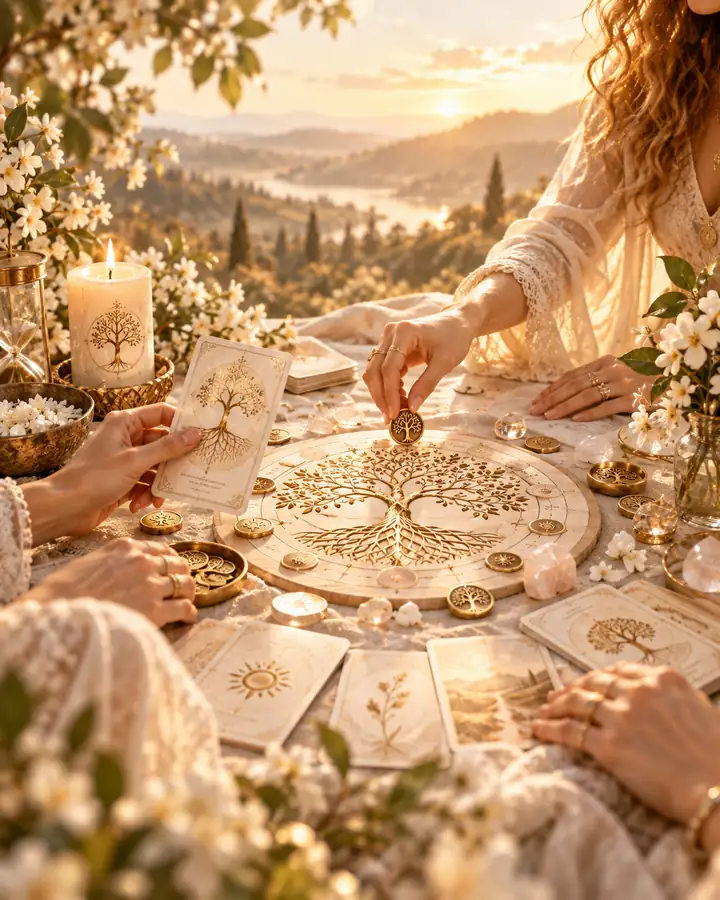

О ФОРМАТЕ
Когда нужен не совет, а путь
Этот формат подходит, когда одна и та же тема возвращается снова, а краткого разговора уже недостаточно. Работа идёт в личном ритме: наблюдение, встречи, осмысление и постепенное закрепление нового.
Не разовая встреча, а последовательный путь: увидеть повторяющиеся сценарии, вернуть внутреннюю опору и выстроить более устойчивые отношения с собой.
Этот формат подходит, когда одна и та же тема возвращается снова, а краткого разговора уже недостаточно. Работа идёт в личном ритме: наблюдение, встречи, осмысление и постепенное закрепление нового.
Пять образов о связи поколений, личной истории, тишине и возвращении к собственной устойчивости.



Для тех, кто хочет не «быстро починить», а действительно разобраться и перестроить то, что повторяется.